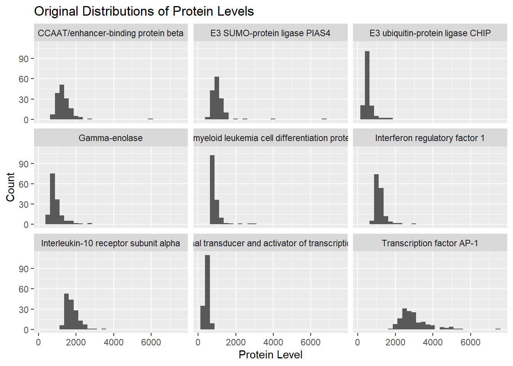

flowchart LR A[Gather Data] --> B[Normalize, clip outliers] B --> C[Identify 10 proteins - Random Forest] B --> D[Identify 10 proteins - t-Test] B --> E[Identify 10 proteins - Correlations with ADOS] C --> F[Identify core panel - 5 proteins found in all 3 methods] D --> F E --> F C --> G[Individually test remaing proteins] D --> G E --> G F --> Z[Final panel] G --> Z
Biomarkers of ASD
Group 8
Abstract
This report explores the identification of biomarkers associated with Autism Spectrum Disorder (ASD) using data from L. Hewitson’s experiment in 2021. Though the original report has since been retracted due to unreliable methodology, this report explores the data and tests alternate methods to those used in the original study. We started with testing why the data was log-transformed, concluding the log-transformation simply made the data more closely resemble a normal distribution, making it easier to work with. We then tested to see if there are any proteins that seem to commonly occur as outliers and if there are any subjects that seem to consistently have outlier protein values. After this analysis, it was apparent that none of the proteins occur disproportionately as outliers, however there were a few patients with over 40 outlier proteins, most of which were in the typically developing (TD) group.
To explore alternative predictive biomarkers, we performed feature selection using a training partition to avoid overfitting and replicated the selection across different methods. Additionally, we experimented with combining sets of top predictive proteins through both a hard intersection and a fuzzy intersection approach, finding that the latter introduced more flexibility while retaining strong classifiers. Performance metrics demonstrated that these panels could contain other potential reliable biomarkers for ASD diagnosis and reinforced the strength of the DERM and IgD proteins as biomarkers.
Dataset
Data was collected on 154 male pediatric subjects, 76 of which were diagnosed with autism spectrum disorder (ASD) and the other 78 were determined to be typically developing (TD). Demographic data was collected for all participants, including age, ethnicity, co-morbidities, and psychiatric medications. The mean age of the ASD group was 5.6 years old, and the mean age of subjects from the TD group was 5.7 years old. Additionally, the SOMAScan platform 1.3k was used to measure the levels of 1,317 proteins in each subject. The levels of these proteins were then log10-transformed, standardized, and then outliers were trimmed to values of -3 or 3 depending on their sign.
Summary of published analysis
In the paper “Blood biomarker discovery for autism spectrum disorder: A proteomic analysis”, Hewitson et al. aim to identify a panel of proteins which can be used as biomarkers for Autism Spectrum Disorder (ASD). The study included 154 male subjects ranging from 18 months of age to 8 years of age. In their paper, Hewitson et al. identified 9 proteins associated with ASD in young boys. After drawing blood from each of the 154 subjects, the SOMAScan platform was used to measure the protein levels of 1,317 proteins in the boys’ serum samples. Before any analysis was performed, the data were normalized by taking a log10 transformation, a z-transformation, and clipping outliers at -3 and 3.
To identify which proteins were strongly associated with ASD, Hewitson et al. used three different methods to determine the significance of each protein, then selected the top 10 most significant proteins from each method.
- The first method used was a random forest which was used to assign an importance score to each protein. The measure used for this importance score was the Mean Gini Index. The random forest model was trained 1000 times and the proteins’ importance scores were averaged across all 1000 runs. Ultimitely the proteins with the 10 highest scores were selected for this model. The selected proteins were: MAPK14, IgD, DERM, EPHB2, ALCAM, eIF-4H, suPAR, SOST, C6, and Calcineurin.
- The second method used was a standard two sample t-test which determines if there is a significant difference in the level of each protein across the TD and ASD groups. The 10 proteins that were found to be most significant were: DERM, suPAR, Calcineurin, MAPK14, EPHB2, RELT, FCN1, IgD, PTN, and C1QR1.
- The third method used was a correlation approach, in which the correlation between the levels of each protein and the subjects’ ADOS score (representing severity of ASD) was calculated. The 10 proteins with the highest absolute value of correlation were selected. These proteins were: DERM, RELT, EPHB2, MAPK14, Prolactin Receptor, ROR1, GI24, suPAR, ARSB, and IgD.
By combining the results of these three methods, Hewitson et al. identified 18 unqiue proteins to further study. 5 of these proteins were selected by all three of the models (MAPK14, IgD, DERM, EPHB2, suPAR). These 5 proteins were taken to be a “core panel” and each of the remaining 13 proteins was investigated to determine if they added any further predictive power to the logistic regression model.
Finally, 9 proteins were identified to be part of the final biomarker panel. These proteins included the 5 from the core panel (MAPK14, IgD, DERM, EPHB2, suPAR) and four additional proteins which were not identified by all three methods (ROR1, GI24, eIF-4H, ARSB).
Findings
Impact of preprocessing and outliers (Task 1 & 2)
Log-Transform

| Protein | Mean Level |
|---|---|
| CCAAT/enhancer-binding protein beta | 1350.0266 |
| E3 SUMO-protein ligase PIAS4 | 1074.8532 |
| E3 ubiquitin-protein ligase CHIP | 751.5539 |
| Gamma-enolase | 924.8701 |
| Induced myeloid leukemia cell differentiation protein Mcl-1 | 886.3500 |
| Interferon regulatory factor 1 | 1178.8104 |
| Interleukin-10 receptor subunit alpha | 1778.6974 |
| Signal transducer and activator of transcription 3 | 448.6260 |
| Transcription factor AP-1 | 2983.3747 |
We see that the protein levels in biomarker-raw.csv seem to be incredibly high, with a lot of the proteins having mean levels at or above 1000. Additionally, we see hat a lot of the distributions are pretty heavily right-skewed, and thus are likely not to be normally distributed.
In contrast, when we look at the same proteins with log-transformed levels below, we see that the now the average protein level is close to 3, which is significantly lower than it was. Also, we see that the log-transform has decreased the skew of the distribution of the protein levels, causing them to be more similar to a normal distribution. We want to work with normally distributed data as often as possible, as it is easy to work with, and many data analytic techniques require normally distributed data.
| Protein | Mean Log Level |
|---|---|
| CCAAT/enhancer-binding protein beta | 3.112058 |
| E3 SUMO-protein ligase PIAS4 | 3.005355 |
| E3 ubiquitin-protein ligase CHIP | 2.723850 |
| Gamma-enolase | 2.941292 |
| Induced myeloid leukemia cell differentiation protein Mcl-1 | 2.932035 |
| Interferon regulatory factor 1 | 3.061256 |
| Interleukin-10 receptor subunit alpha | 3.243383 |
| Signal transducer and activator of transcription 3 | 2.643626 |
| Transcription factor AP-1 | 3.461764 |
Examining Outliers
| Protein Group | Number of Proteins |
|---|---|
| 0-2 subject with an outlier value | 777 |
| 3-5 subjects with outlier values | 335 |
| >5 subjects with outlier values | 9 |
Most of the proteins had an outlier value in at least one participant, only 0.6833713% of proteins have 6 or more participants with an outlier value. The majority of proteins do not have have multiple subjects with an outlier value.
Are certain subjects more likely to have outlier values?
| Outlier Grouping | Number of Subjects |
|---|---|
| >100 outlier proteins | 6 |
| 40-100 outlier proteins | 5 |
| Less than or equal to 40 outlier proteins | 141 |
| ID | Number of Proteins with Outlier Values | Group | Outlier Grouping |
|---|---|---|---|
| 9 | 126 | ASD | >100 outlier proteins |
| 24 | 48 | ASD | 40-100 outlier proteins |
| 52 | 121 | ASD | >100 outlier proteins |
| 77 | 114 | TD | >100 outlier proteins |
| 100 | 47 | TD | 40-100 outlier proteins |
| 108 | 127 | TD | >100 outlier proteins |
| 121 | 122 | TD | >100 outlier proteins |
| 131 | 45 | TD | 40-100 outlier proteins |
| 147 | 77 | TD | 40-100 outlier proteins |
| 150 | 47 | TD | 40-100 outlier proteins |
| 154 | 157 | TD | >100 outlier proteins |
We see the majority of subjects seem to have less than or equal to 40 outlier proteins, with only 11 subjects having more than 40 proteins with outlier levels.
There do seem to be particular subjects that consistently have outlier protein values, with some subjects having outlier values in over 100 different proteins. Such subjects seem more likely to be in the typical developing group, with 8 subjects from the typical developing group having 40 or more proteins with outlier levels, and only 3 subjects from the ASD group having 40 or more proteins with outlier levels.
Methodological variations (Task 3)
Part 1: Repeat the analysis
Note: carry out the entire selection procedure on a training partition – in other words, set aside some testing data at the very beginning and don’t use it until you are evaluating accuracy at the very end
Replicating the feature selecting process on only the training dataset.
ASD TD class.error
ASD 34 26 0.4333333
TD 14 49 0.2222222# A tibble: 4 × 3
.metric .estimator .estimate
<chr> <chr> <dbl>
1 sensitivity binary 0.75
2 specificity binary 0.8
3 accuracy binary 0.774
4 roc_auc binary 0.871We have these four proteins (DERM, IgD, TSP4, FSTL1) for our final panel.
Part 2: Choose a larger number of top predictive proteins
Note: more than ten and use each selection method
[1] "DERM" "RELT" "Calcineurin" "IgD" "PTN"
[6] "FSTL1" "MAPK2" "TGF-b R III" "Notch 1" "ALCAM"
[11] "MATN2" Now we have ten proteins (DERM, RELT, MRC2, IgD, PTN, FSTL1, Cadherin-5, MMP-2, Notch 1, ALCAM) in our final panel.
# A tibble: 4 × 3
.metric .estimator .estimate
<chr> <chr> <dbl>
1 sensitivity binary 0.812
2 specificity binary 0.867
3 accuracy binary 0.839
4 roc_auc binary 0.946Increasing the number of selected proteins: By expanding from 10 to 20 top proteins, we’ve allowed for potentially more relevant predictors, increasing the specificity slightly but not affecting sensitivity much. This change leads to more comprehensive protein coverage, improving accuracy and ROC AUC.
Part 3: Fuzzy Intersection
Note: instead of a hard intersection use a fuzzy intersection to combine the sets of top predictive proteins across selection methods. How are results affected by each modification?
$fuzzy_proteins
[1] "DERM" "RELT" "Calcineurin" "C1QR1"
[5] "MRC2" "IgD" "CXCL16, soluble" "PTN"
[9] "FSTL1" "Cadherin-5" "TGF-b R III" "MAPK14"
[13] "eIF-4H" "M2-PK" "SOST" "ALCAM"
$hard_intersection_proteins
[1] "DERM" "RELT" "IgD" "FSTL1"This approach allows for greater flexibility in protein selection allowing for more in the protein list, potentially including proteins with lesser predictive strength, while the hard method ensures higher confidence in selected biomarkers.
# A tibble: 4 × 3
.metric .estimator .estimate
<chr> <chr> <dbl>
1 sensitivity binary 0.562
2 specificity binary 0.733
3 accuracy binary 0.645
4 roc_auc binary 0.779Using a fuzzy intersection: This modification aims to retain proteins chosen by either selection method, rather than only the exact matches. Although it captures more potential biomarkers, it lowers sensitivity and accuracy slightly, indicating that the fuzzy selection introduces less specific, possibly weaker predictors. ROC AUC remains high but shows reduced confidence in positive classification, as shown by lower sensitivity.
Improved classifier (Task 4)
Approach 1: LASSO Regression
| .metric | .estimator | .estimate |
|---|---|---|
| sensitivity | binary | 0.7222222 |
| specificity | binary | 0.8461538 |
| accuracy | binary | 0.7741935 |
| roc_auc | binary | 0.7905983 |
Having previously been provided with a model that used a multiple t-test and random forest model for the purpose of variable selection, we attempted to find out if we can create another panel with similar, or better, results. In our first approach, we implemented the lasso regression model with the goal of shrinking all predictors to zero except for at most 6. Originally, we wanted to find less than ten, but with some trial and error, the results showed that using only 6 proteins produced the best results. We were left with PTN, MAPK2, Coagulation Factor IX, IgD, DERM, and aldolase A, which we plugged into a logistic model, then calculating the performance metrics using the test data. From the results, the roc_auc and sensitivity of our model were lower than those of the in-class analysis, however, the accuracy was the same and the specificity was higher.
Approach 2: Stepwise Variable Selection
In the second approach, we split the data into a train/test split at a 80/20 proportion stratified across class to ensure even amounts of ASD and TD boys in both sets. In this approach, we opted for a different method of selecting predictors. Here, we performed forward selection, starting with a null model containing only an intercept and iteratively adding each of the 18 proteins identified in the study:
Performing Forward Stepwise Regression resulted in the below model:
Call:
glm(formula = class ~ DERM + IgD + FCN1 + `eIF-4H` + PTN + C6 +
EPHB2 + ROR1, family = binomial, data = biomarker_train)
Coefficients:
Estimate Std. Error z value Pr(>|z|)
(Intercept) -0.1396 0.2749 -0.508 0.611533
DERM -1.2751 0.4735 -2.693 0.007080 **
IgD -1.3722 0.3537 -3.879 0.000105 ***
FCN1 1.8395 0.4659 3.948 7.88e-05 ***
`eIF-4H` -0.9204 0.3330 -2.764 0.005717 **
PTN -1.1800 0.4400 -2.682 0.007320 **
C6 0.8957 0.3857 2.322 0.020224 *
EPHB2 -1.2375 0.4648 -2.662 0.007758 **
ROR1 1.3146 0.5351 2.457 0.014025 *
---
Signif. codes: 0 '***' 0.001 '**' 0.01 '*' 0.05 '.' 0.1 ' ' 1
(Dispersion parameter for binomial family taken to be 1)
Null deviance: 169.095 on 121 degrees of freedom
Residual deviance: 85.141 on 113 degrees of freedom
AIC: 103.14
Number of Fisher Scoring iterations: 6From the above output of summary(forward_model), we see that 8 out of the 18 proteins were selected to be included as predictors of ASD. The selected proteins were DERM, IgD, FCN1, eIF-4H, PTN, C6, EPHB2, and ROR1.
Interestingly, the model found through forward stepwise selection did not include the proteins MAPK14 or suPAR, which is surprising considering that these proteins were part of the “core panel” found by Hewitson et al., meaning that each of the three methods used in the study identified these as being significant predictors of ASD. Despite the exclusion of these two “core” proteins, this model performed well on the testing data, achieving the below sensitivity, specificity, accuracy, and ROC AUC.
| .metric | .estimator | .estimate |
|---|---|---|
| sensitivity | binary | 0.8125000 |
| specificity | binary | 0.8750000 |
| accuracy | binary | 0.8437500 |
| roc_auc | binary | 0.9101562 |